Discovery for an education consultancy

Statement of originality and confidentiality: to comply with my non-disclosure agreement, I have omitted and obscured confidential information in this case study. This material belongs to the organisation named on it and is shared only to demonstrate my work experience and skills for the purpose of employment.
Brief
ISA is a leading educational consultancy providing services in international education. Spread across Asia, Africa, Europe, Latin America and the Pacific, ISA partners with accredited schools and universities to meet its customers' needs.
QBurst was asked to run a UX discovery phase and provide recommendations for redesigning the existing ISA website.
Objectives
- A website that delivers a more appealing, effective, user-friendly and personalised experience for target audiences across all devices and channels, to improve both user and business performance.
- A new content management system that non-technical business users can use to manage and publish content.
- A site that is easier to administer and maintain.
Goals
- Assess the current, or "as-is", state to define the nature and scope of the challenges.
- Build a shared understanding and consensus within ISA and WorldStrides about priorities, goals and desired outcomes.
- Create a vision for the future, "to-be", state that gives direction to the design and development teams.
- Recommend solutions and platforms that deliver on ISA's vision for its target audiences across devices and channels.
My role
I worked with the QBurst UX team in the US on the discovery phase, which ran for two months.
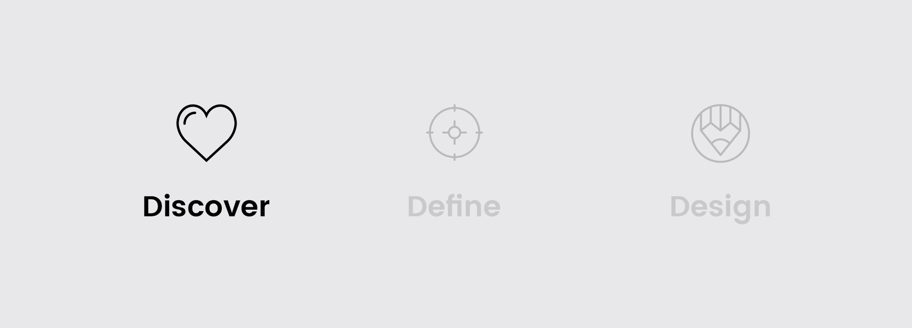
Discover
Target audience
We interviewed stakeholders and students to learn who they were, and their goals, needs, challenges and behaviours.
ISA's business and competitors
I ran a competitor analysis to better understand ISA's business, operations, goals, risks and challenges, and the education industry.
Heuristic evaluation
We also analysed the current site to understand its flows and the strengths and weaknesses of its UI.
Key takeaways
- Key business challenges include changing preferences, expectations and behaviours across all audience segments.
- Outdated proprietary technology and IT resourcing.
- A redesign will fix the presentation issues on the website, but the biggest challenges are related to content and structure.
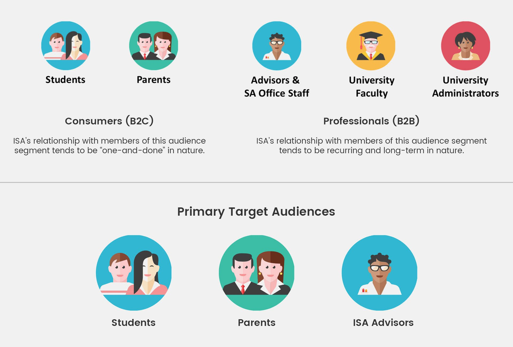
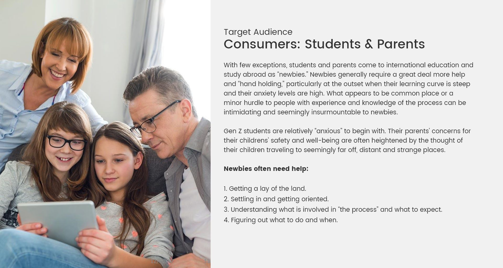
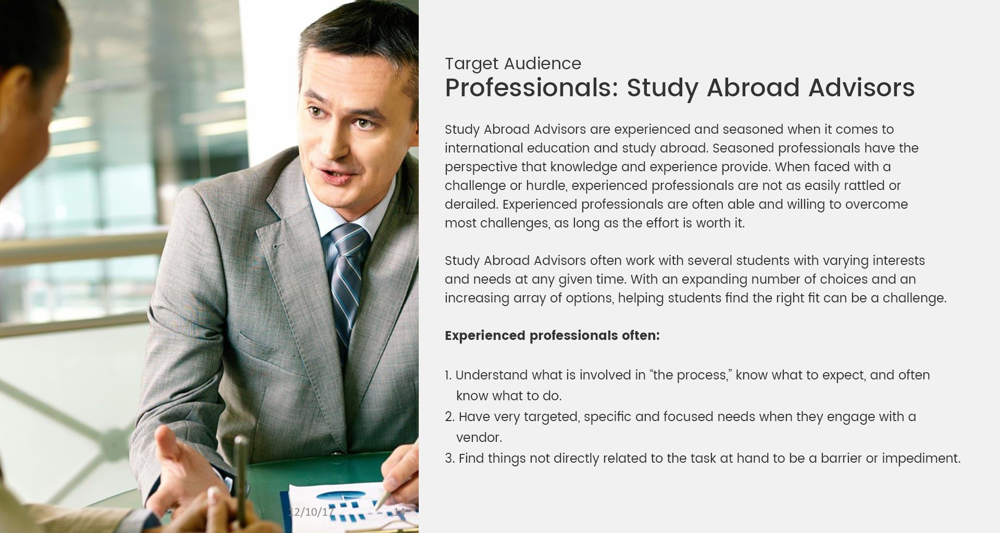
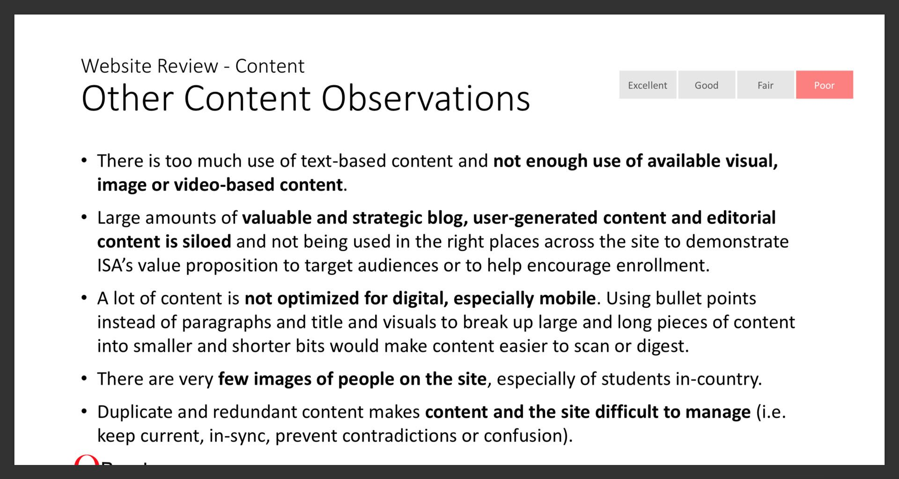
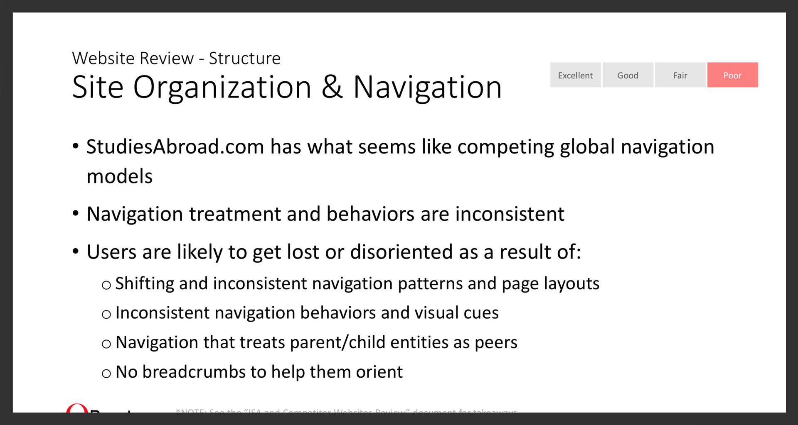
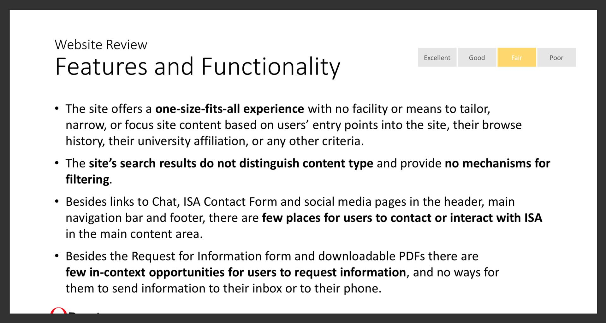
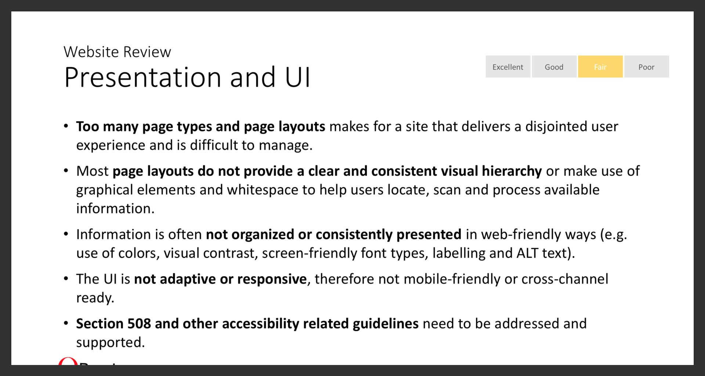
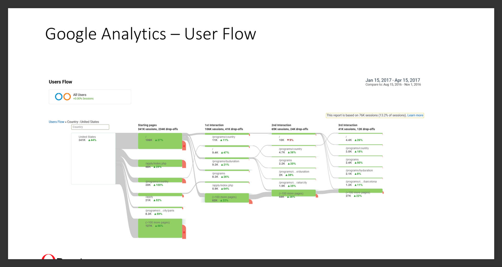
Stakeholders
We interviewed stakeholders to better understand their vision, concerns and needs.
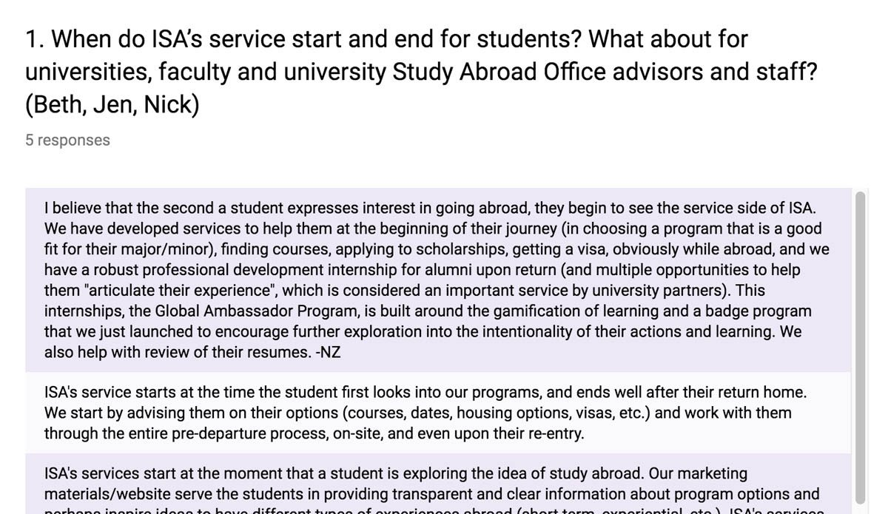
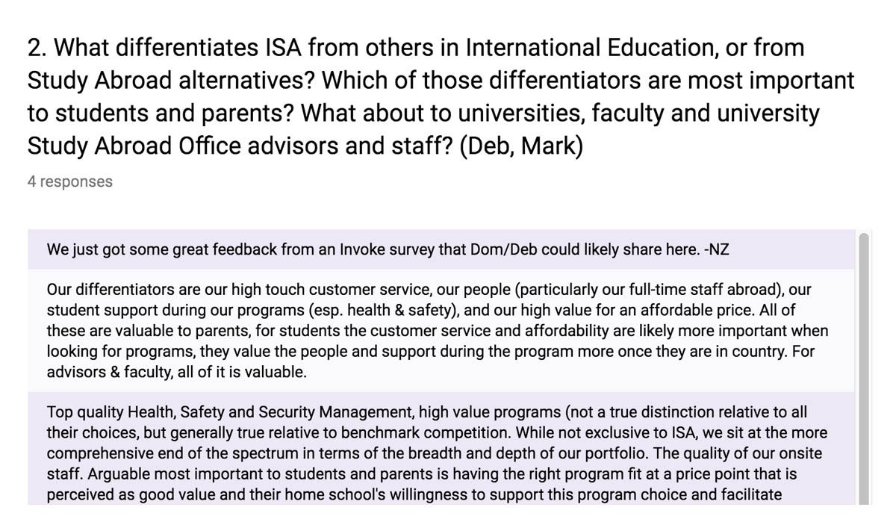
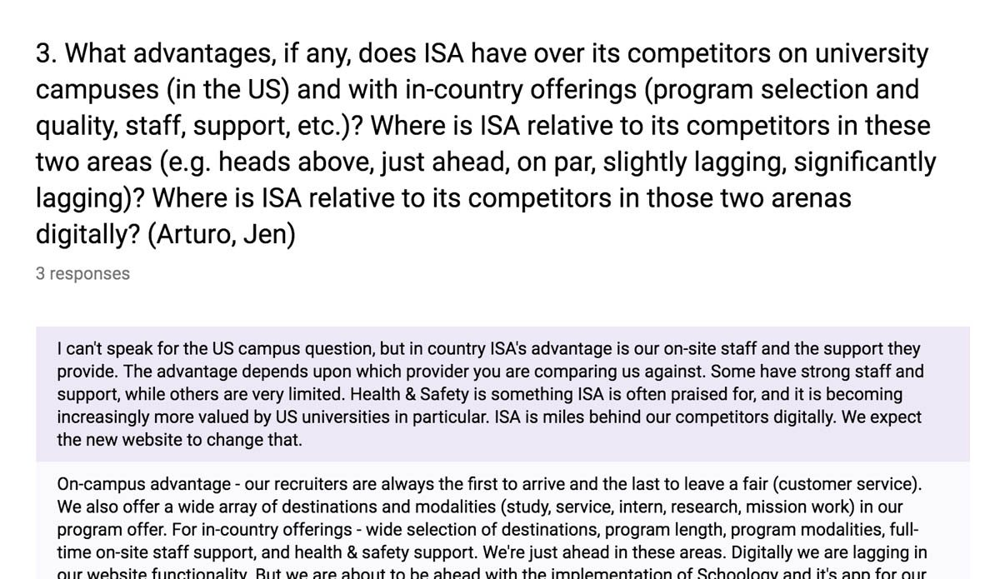
Proposed wireframe
Our recommendations came together in a proposed wireframe for the new site.
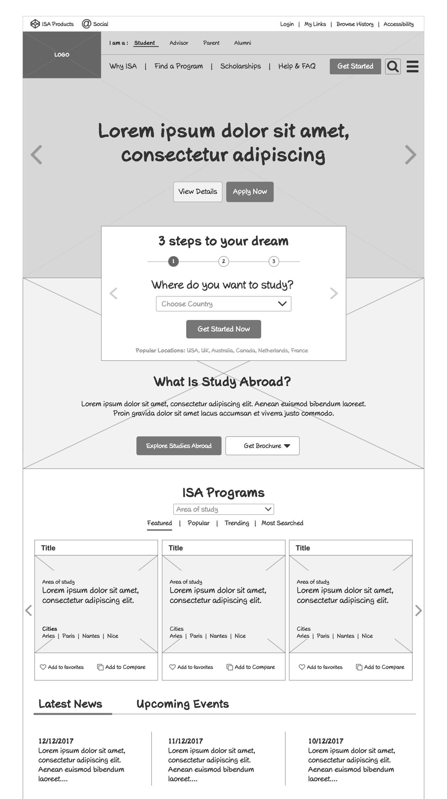
Conclusion
What would I do next?
For a smoother move into the design phase, a few more tasks were needed, including card sorting, user flows and usability testing. These weren't possible within the budget and time available.
Let’s connect
A UX and product designer crafting clear, human experiences through research, design and design systems.
© 2026 Binu Jose · Wellington, New Zealand